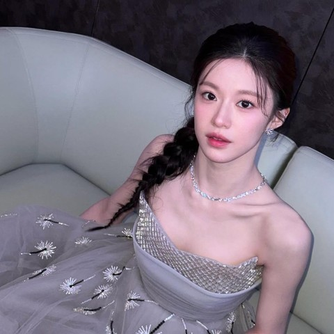

A timeless scene
01Character / quiet strength
01 / GO YOUN JUNG
A quiet archive for actress, model, and stories behind every character.
EXPLORE ARCHIVE ↓
02 / SELECTED MOMENTS
Four moods. One unmistakable presence.
Character / quiet strength
Candid / stillness
Cinema / atmosphere
03 / WORKS
2023
2022
2022
2020
04 / ABOUT
Go Youn Jung is South Korean actress and model, born April 22, 1996. Her work balances softness and intensity, from quiet close-ups to action-driven characters.
Independent fan site. Images belong to respective owners and appear for editorial fan appreciation.